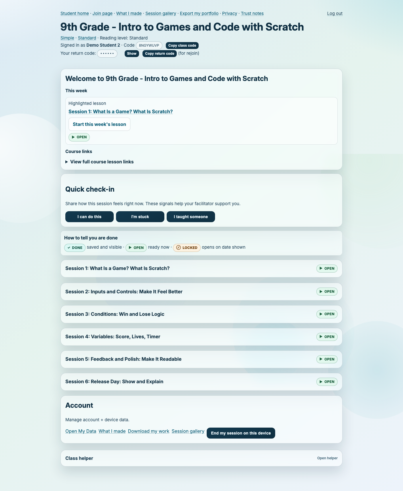
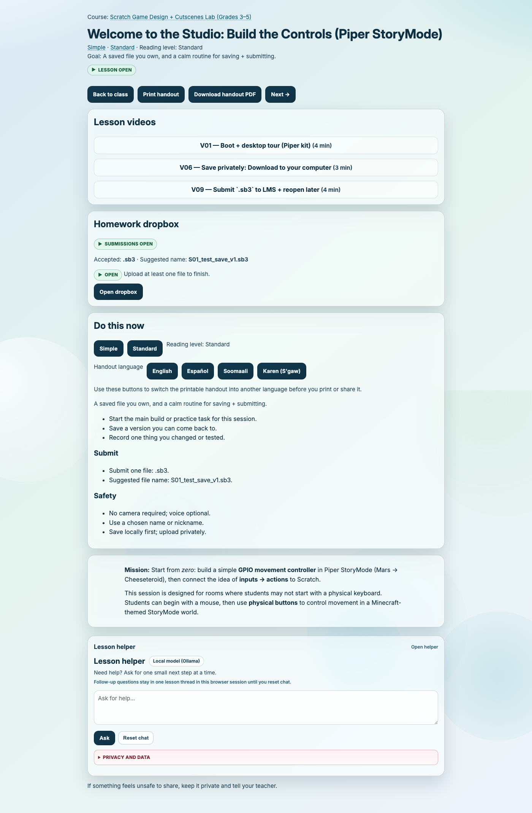

Non-Developer Guide (Teachers and School Staff)¶
If you are not writing code, start here.
You do not need to read every docs file. For normal classroom use, this page plus TEACHER_PORTAL.md is enough.
If one class needs a local lesson tweak without changing the shared curriculum for everyone else, use LESSON_OVERRIDES.md.
If you want a guided wiki reading order, open TEACHER_DOCS_JOURNEY.md.
If you want the shortest role-based path, open START_HERE_INSTRUCTOR.md. If you need an action-only checklist for tomorrow's class, use RUN_A_CLASS_TOMORROW.md.
Visual references¶



flowchart LR
A[Before class<br/>5-min check] --> B[During class<br/>Teach + monitor]
B --> C[End of class<br/>Closeout]
C --> D[If issues<br/>Troubleshooting]
D --> ATeacher wiki journey (recommended order)¶
If you are deciding "what should I read next?" use this order:
- START_HERE_INSTRUCTOR.md for the big picture.
- RUN_A_CLASS_TOMORROW.md for class-day execution.
- This page for plain-language classroom workflow.
- TEACHER_PORTAL.md for step-by-step screen guidance.
- COMMON_SCENARIOS.md and TROUBLESHOOTING.md for failures.
Full guided version: TEACHER_DOCS_JOURNEY.md.
What this system does¶
- Students join with a class code and a display name (a pseudonym is suggested by default — real names are not required).
- Teachers run classes and review work in the Teacher Portal (
/teach). - The Homework Helper gives hints inside lessons.
Why pseudonyms?¶
To reduce accidental collection of personal information, the join page pre-fills each student's display name with a friendly pseudonym like "Curious Otter 17." Students can keep it, change it, or type any nickname. If your organization prefers real names, students can simply clear the suggestion and type their own.
Facilitator script (read aloud if needed):
"You don't need to use your real name here. You'll see a fun made-up name already filled in. You can keep it or type your own nickname — just pick something your teacher can recognize."
5-minute startup check (before class)¶
- Open the site homepage.
- Open
/teachand confirm your teacher login works. - Open your class and confirm enrollment mode matches today (
Open,Invite only, orClosed). - If using invite-only enrollment, verify at least one active invite link is ready.
- Open one lesson and test the Helper once.
- Confirm submission inbox is visible for your upload lesson.
If any step fails, use TROUBLESHOOTING.md.
During class: what to do¶
- Open your class in
/teach. - In
Lesson Tracker, open only the lesson you are teaching now. - Adjust lesson release (open/lock/date) as needed.
- Keep the student home clear:
This weekshould point to the current lesson.Course linksshould have the expected sequence.- Use
Helper tuningin that lesson row if you want to narrow helper focus. - Review missing submissions from the dropbox links.
- For paid/limited cohorts, monitor invite seat usage and disable links when full.
Shared curriculum vs class-local edits¶
- Shared curriculum is still file-first and repo-native.
- If your team updates course files in the repository, that affects the canonical version of the curriculum.
- Teacher lesson edits in the portal are different:
- they are class-local,
- they are reversible,
- they do not modify repository course files.
- Use a class-local override when one class needs a pacing note, temporary wording change, or local adaptation.
- Use normal curriculum-authoring or coursepack workflows when the shared curriculum itself should change for everyone.
Step-by-step guide: LESSON_OVERRIDES.md
Student portfolio + gallery basics¶
- Student artifacts are teacher-only by default.
- Students can opt in per artifact from upload pages (
Publish to class gallery wall). - Teachers can approve/unapprove gallery visibility from
/teach/material/<id>/submissions. - Teachers can enable/disable a session gallery from
/teach/module/<id>. - Students can review their own work history in
/student/portfolio. - The public-in-class gallery page (
/student/gallery) only shows student-published + teacher-approved artifacts.
Deep walkthrough: TEACHER_PORTAL.md
End of class: quick closeout¶
- Review missing submissions.
- Rename student entries if needed.
- Lock lessons or set next lesson date.
- Export outcomes/summary CSVs for parent/funder reporting if needed.
- For eligible students, issue certificates from
Certificate Eligibility.
Common problems (plain language)¶
- "Students cannot join": check enrollment mode and class lock status:
Invite onlyrequires an invite link.Closedblocks all new joins.- "This invite is full" means the seat cap is reached.
- "Helper is not responding":
check
/helper/healthzand follow TROUBLESHOOTING.md. - "Teacher page looks empty":
sections are collapsed by default; open
Lesson TrackerandRoster. - "Uploads are failing": check allowed file types and upload size in module material settings.
Read only what you need next¶
- Guided teacher read path: TEACHER_DOCS_JOURNEY.md
- First-time teacher checklist: RUN_A_CLASS_TOMORROW.md
- Short playbooks for common issues: COMMON_SCENARIOS.md
- Class-local lesson editing guide: LESSON_OVERRIDES.md
- Teacher workflow and screen-by-screen guide: TEACHER_PORTAL.md
- Day-1 setup (technical setup team): DAY1_DEPLOY_CHECKLIST.md
- Incident recovery: TROUBLESHOOTING.md
- Security and privacy boundaries (policy and governance): SECURITY.md